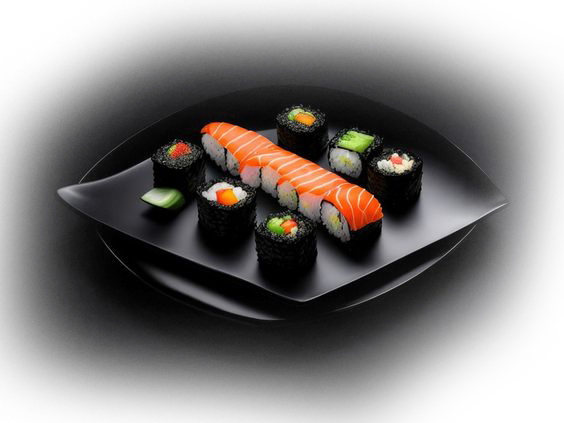

Check out
Our Menu
Starters
Tomato Soup
A rich and velvety soup with aromatic garlic,
fresh basil and parmezan
$ 4.90
Noodle Soup
A comforting bowl of tender noodles simmered in a flavorful broth,
infused with fresh herbs and spices.
$ 5.50
Pampkin Soup
A luscious and velvety pumpkin soup, crafted from roasted pumpkins
blended to perfection with a hint of warm autumn spices.
$ 6.90
Breakfast
Delicious Pancakes
Experience a heavenly stack of fluffy pancakes topped
with a luscious swirl of freshly whipped cream and juicy raspberries.
$ 8.90
Sweet Heaven
Start your day with a refreshing bowl of crunchy cereals, lightly sweetened and perfectly paired
with a vibrant mix of fresh, seasonal fruits.
$ 7.90
Asia "English" Breakfast
English breakfast, featuring two perfectly cooked eggs your choice of scrambled, fried,
or poached—served alongside crispy bacon, juicy sausages, and grilled tomatoes.
$ 9.90
Lunch
Delicious Sushi Roll
Sushi roll, featuring a delightful mix of crisp vegetables, savory seafood, and crunchy tempura, all wrapped in a sheet of nori.
$ 9.90
Beef Bowl
Traditional Japanese beef bowl, known as Gyudon, which is a popular
dish in Japanese cuisine. The bowl features tender slices of beef cooked
with onions and simmered in a savory sauce, layered over steamed rice.
$ 9.90